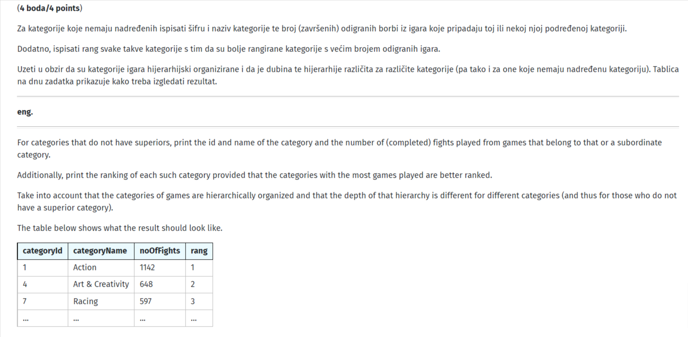
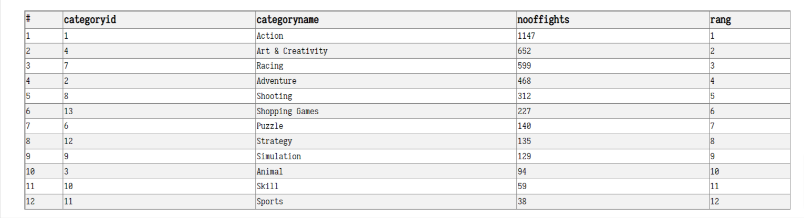

jel mi moze netko rec sta sam fulao nikako da dobijem dobar rez
with recursive igre(cid, cname, supcid, fid) as (
select category.categoryid, categoryname, supcategoryid, fightid
from fight natural join game natural join category
group by category.categoryid, categoryname, supcategoryid, fightid
union
select category.categoryid, categoryname, supcategoryid, fid
from category, igre
where category.categoryid = supcid
group by category.categoryid, categoryname, supcategoryid, fid
)
select cid as categoryid, cname as categoryname, count(*) as noOfFights,
row_number() over (order by count(*) desc) as rang
from igre
where supcid is null
group by cid, cname
zadatak

moj rez

ps. moje rjesenje se uopce ne poklapa s njihovim